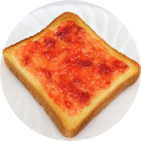

Special
小麦畑のこだわり
小麦畑の素材はこだわりの素材を使用しています。
北海道産の「はるゆたか」をブレンドしたオリジナル配合の小麦粉で、冷めても香り豊かな食パンをお届けしています。
自然解凍後にそのまま召し上がっても美味しいですし、トーストしていただいても更に香りが広がります。
どんな食べ方をしても、素材を引き出す絶妙な香ばしさが、「小麦畑」のこだわり製法です。
当ショップ自慢の「小麦畑」を、是非いちどご賞味ください。
オンラインショップで購入する
焼いても
付けても
挟んでも
About
美味しさの秘密
01
こだわりの食材
北海道産の「はるゆたか」をブレンドした、「小麦畑」オリジナル配合の国産小麦を使用しています。
小麦、水、バター、卵、全て国産にこだわって食材を仕入れ、美味しい食パンを作っています。
02
熟練の職人技
「小麦畑」はその道40年のパン職人が考案した幻の逸品です。
大量生産をしないからこそできる手間ひまかけた製法で、じっくり発酵させ、もちもち食感を生み出しています。
03
いつでも焼きたての味
急速冷凍で焼きたての味を閉じ込め、いつでも焼きたてのような美味しさをお届けしています。
寝る前に冷蔵庫に入れていただければ、翌日の朝食には、美味しい食パンが召し上がれます。
そのままでもトーストでもどうぞ。
Information
商品情報